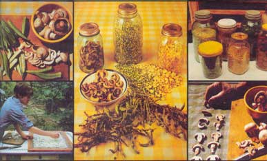
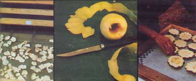
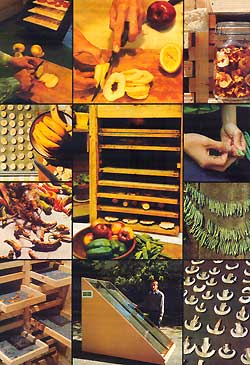
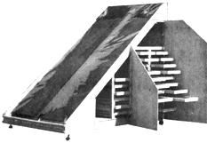

Make Your Food Dollar Go Further: Dry Your Own Fruits And Vegetables At Home!
When it comes to preserving fresh edibles economically and conveniently, it's hard to beat the centuries-old technique of drying!
By Lorna Peterson
July/August 1977
Dehydration as a method of food preservation has been around a long time. Primitive man dried victuals by the heat of the sun or with the aid of fire, then ground the dehydrated stores into a long-lasting powder or ate them "as is". Now, thousands of years later, dehydration is still one of the most widely used methods of food preservation in the world . . . for some mighty good reasons.
- Drying preserves the vitamin, mineral, protein, and fiber content of foods . . . more so than preservation techniques that expose the viands to great changes in temperature.
- Dehydrated foodstuffs are actually more flavorful - in most cases - than the original, undried food. (Frozen and canned edibles, on the other hand, are - if anything - less tasty than their fresh or dried equivalents.)
- It costs little or nothing to dry foods, whereas freezing and canning both require a potentially large initial investment in equipment.
- Dried goods can be stored in a smaller space than either frozen, canned, or fresh foods. (Twenty pounds of tomatoes, for instance, will - when canned - fill eleven one-quart jars. The same quantity of tomatoes dried weighs a little more than a pound and occupies a single No. 10 can.)
- Dried foods - when kept dry - remain edible virtually forever.
If these aren't powerful enough reasons for you to begin thinking about drying your own foods at home, consider this: By buying fruits and vegetables in bulk when they're in season (and thus lowest in price) - then dehydrating them for later use - you can enjoy your favorite eats year round, in season or out, for just a fraction of what you'd pay on a buy-as-you-eat basis. If nothing else, food drying is a great way to reconstitute your shrinking food dollar!
How to Get Started
If you want to dehydrate foods quickly (and you don't mind warming up the kitchen), you can dry your fruits and vegetables in the oven. This method, however, has the disadvantage that it usually causes a greater change in the color, flavor, and vitamin content of foods than does open-air drying.
A better - though more time-consuming - way to dehydrate foods is to use a cabinet-type food dryer, or simply rely on Ole Sol to do the job. Sundrying requires very little in the way of equipment: just a couple of tables (or other flat surfaces) that can be set up outside, some cookie sheets, aluminum foil, or butcher paper on which to dry the edibles, and a protective netting (cheesecloth, for instance) to keep insects off the food.
There's nothing complicated about preparing victuals for drying. The key things to remember are:
- The food(s) should be clean and ripe. (Don't expect green or overripe fruit to taste anything but green or overripe after it's been dried.)
- Juicy items should be cut up before they're dehydrated.
- The chunks of food must be arranged on the tray or table in such a way that air can circulate freely between them. If you crowd the pieces together, mold can quickly ruin the entire batch.
What to Dry: Herbs!
The list of foodstuffs that can be dried is long indeed . . . too long-certainly-to fit on this page. Herbs, however, have to be among my favorite dryables. I love to go out around my farm on a spring morning after the dew has dried and harvest dandelion greens, nettles, comfrey, mint, and lemon balm . . . then bring them inside, wash them lightly (if rain hasn't already done so), and blot the pickings on a towel before putting them out to dry.
Of course, you don't really need a food dehydrator to dry herbs: All you have to do is tie the plants in bundles and hang them in a dry place (such as the attic) for a few days. When the herbs are crackling-dry, they can be crushed and put into freezer bags or jars and stored in a dark place. The seasonings can then be used in teas, or ground fine and added to soups, stews, or other dishes.
Fruits are Naturals for Drying
Virtually any kind of fresh fruit can be dehydrated satisfactorily. Pineapples and bananas - which can be bought year round - are particularly good when dried . . . especially if they've been purchased in a very ripe condition and cut into thick chunks before being processed. These fruits - in their desiccated state - have a sweetness and a delightful chewiness that are hard to beat.
Few things - in my opinion - are more fun to dry than the seasonal fruits: cherries (sour and sweet), peaches, apricots, pears, plums, etc. I like to buy or handpick big boxfuls of these fruits and taste-sample them as I slice 'em up to be dried. Believe me, it's a very satisfying feeling to have a year's supply of these delicacies in storage, and to know that you didn't have to spend hours scalding and packing and canning the fruit to get that supply.
Stone fruit - 'cots, peaches, plums, etc. - need only be sliced in half and pitted prior to drying . . . no peeling is necessary. (Hint: The dehydrating goes a little faster if you turn each fruit half inside out by pressing on the skin side with your thumb.)
To dry pears, all you have to do is quarter the fruits and place them on the rack, skin side down. The same goes for apples, which you can also slice into rings, if you prefer. (Coring is optional.) Apples will turn brown (due to oxidation) when dried, but the color change doesn't affect the fruits' flavor.
To make your own raisins, simply pull seedless grapes from bunches and spread them out on the drying tray or table.
All of the above fruits should be hard dried: That is, they should contain no moist spots when done. (Remember, bacteria and mold can only grow where there's water.) Hard dried fruits can be softened by soaking them in water or juice before they're eaten . . . or they can be left lying out in the kitchen for a while to be softened naturally by the moisture in the air.
One of the most satisfying things you can do with your fresh fruit (or with softened dry fruit) is make fruit leather . . . the kind that sells for up to 79 cents a roll at the grocery store (but that you can produce for pennies at home). To make your own leather, simply:
- Cut one or more kinds of fruit into chunks.
- Throw the pieces into the blender.
- Blend until smooth
- Pour the puree out onto plastic wrap or wax paper to dry. (Note: As the sheet of pulp dries, it'll begin to curl up . . . so be sure to tape the corners of the "carrier sheet" down, or put pennies on each corner to hold the plastic or wax paper flat.)
If the fruit is extra-juicy (as is the case, for instance, with most berries), you may want to add apple chunks - which are high in pectin - to the puree while it's still in the blender to "stiffen up" the leather. (Alternatively, you can use one tablespoon of ground flaxseed for each cup of blended fruit.) For added fun, try stirring small seeds or chopped nuts into the fruit blend before you dehydrate it.
When your leather is finally dry, peel the plastic or wax paper off its back, roll the sheet of pulp into a "scroll", and rewrap the scroll in the plastic wrap or wax paper to keep for future use . . . if you can resist eating the whole thing right then and there!
You Can Also Dry Vegetables
In addition to fruits, many kinds of vegetables - including beans, peas, peppers, beets, carrots, turnips, potatoes, yams, onions, squash, and cereal grains - can be dehydrated. Corn can be dried on the cob (after which the kernels come off easily). Even the corn's silk is useful either as an herb or powdered and added to soups. Dried onion and leek tops, likewise, make fine condiments for use in soups and salads. Zucchini and cucumber slices can be dehydrated to make delightfully good-tasting chips suitable for dipping or just plain nibbling.
I've also found that parts of many vegetables that aren't normally used - stems, tops, roots (in some cases), and blossoms - can be dried and later added to soups, stews, and broths . . . or ground into powder and blended with cheeses to make delicious spreads.
Dried Foods Will Keep For Years
Regardless of what you decide to dehydrate (I've only mentioned a few possibilities), remember that dried foods are good only as long as they're kept dry. This means you should always store your dried goods in airtight containers (I prefer plastic bags or glass jars), preferably away from light. If you follow this precaution, your dried edibles should remain dry and edible for many years.
Why Not Give Drying a Try?
In these few pages, I've hardly even begun to describe the joy and satisfaction that can come from drying foods at home. Let me just say - in conclusion - that I don't know of a better way to...
- Cut your yearly food bill
- Free up valuable cupboard and freezer space
- Enjoy a greater variety of more flavorful foods . . . than to dry your own herbs, fruits, and vegetables at home.
Give food dehydration a try . . . you'll be both money and health ahead!
A Test Report on the CEC Food Dryer
Little one- and two-square-foot trays are all right for food drying experiments... but if you really want to dehydrate and preserve edibles in any reasonable quantity, you're going to need a dryer that holds a bushel or more of produce at a time.
Plans for just such a unit are available for $1.50 (in the U.S. and Canada) from the Community Environmental Council, Solar Research Group, 109E De La Guerra, Santa Barbara, California 93101. Even though the folks at CEC call this solar-powered dehydrator an "herb dryer", the hefty man-sized rig will-of course - dehydrate any kind of produce you care to load into it.
The unit works by using a small fan to force air down its face, between a sheet of clear vinyl and a section of corrugated black metal roofing. The air absorbs warmth from the sun during this journey ... and then transfers that heat to the cut-up pieces of food spread out on trays inside the dryer's cabinet as it is circulated around those trays and out a side vent.
Emerson Smyers, one of Mother's researchers, built and tested a dehydrator constructed according to the CEC's plans. He quickly found [1] that inflation has taken its toll in the three years since the drawings and instructions were released. Whereas the council estimated the cost of the unit's materials at $195.79 in 1974. . . those same materials now price out at $240.
Emerson also feels [2] that the fabrication of the unit is no job for a raw beginner. He says: "This project takes quite a bit of time and expertise and a set of power tools helps."
Smyers found, too, that the plans [3]omit some important information, particularly in illustrations, and [4] call out some dimensions wrong and change others from one illustration to another. He was also dismayed to discover that the CEC instructions specified "galvanized" and "fiberglass" drying screens for the dehydrator . . . two materials which can contaminate food when exposed to heat and moisture.
Despite these shortcomings, however, everyone here at Mother Earth News who has tested the finished dryer feels that its basic design is a good one and that the CEC deserves a pat on the back for "thinking big". We look forward to seeing a revised set of drawings for this dehydrator distributed far and wide.
For More Information
The following how-to guides contain a wealth of information on the art of drying food. All are available from large bookstores or from Mother's Bookshelf, P.O. Box 70, Hendersonville, N.C. 28739. (Please remember to enclose 754t for postage and handling when ordering books by mail.)
- Dry It-You'll Like It! by Gen MacManiman (Living Foods Dehydrators, 1973). 58 pages. Paperback.
- Keeping the Harvest: Home Storage of Vegetables & Fruits by Nancy Thurber and Gretchen Mead (Garden Way, 1976). 202 pages. Large paperback.
- Home Drying Vegetables, Fruits, and Herbs by Phyllis Hobson (Garden Way, 1975). 60 pages. Paperback.
- How to Build Food Drying Equipment by John A. Magee (California Wood Plans, 1975).17 pages. Paperback.
- Putting Food By by Ruth Hertzberg, Beatrice Vaughan, and Janet Greene (The Stephen Greene Press, 1975). 370 pages. Paperback.
- Stocking Up: How to Preserve the Foods You Grow Naturally by the editors of Organic Gardening and Farming (Rodale Press, 1973). 351 pages. Hard cover.
 |
 |
 |
|
 |
 |
|